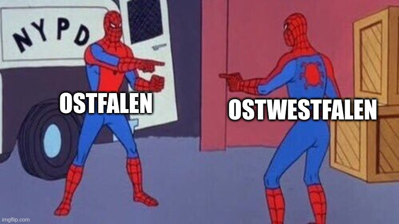

<a href="https://www.javaland.eu">
Javaland
</a>HOWL at the moon
Back to the future mit HTMX
About
Senior Software Engineer @adesso Business Area Manufacturing
Java, Web

About


ü뮂Äçüë©‚Äçüëß‚Äçüë¶ üèä‚Äç‚ôÇÔ∏è üö¥ üèÉ
JHipster Core Team Member
JUG Paderborn Orga

Paderborn
Geschichte
sportlich
Promis
kulinarisch
Paderborn
…üòî
Agenda
Hypertext & Hypermedia
HTMX
Thymeleaf, Spring Boot and HTMX
Hypermedia & Hypertext
| How old are the terms hypermedia and hypertext? |
Hypertexts: new forms of writing, appearing on computer screens, that will branch or perform at the reader’s command. A hypertext is a non-sequential piece of writing; only the computer display makes it practical.
1963
— Ted Nelson
— Ted Nelson
Hypermedia & Hypertext
| actually, it all goes even back to the 40ties and the memex üò± |
essential is the non-linear branching model
links between hypermedia documents
HTML
HTML is the most widely used form of hypermedia
Invented by Tim-Berners Lee in the 90ties
Today more or less "everywhere"
only two elements: anchor and form
HTML Anchor
What does it mean and do?
Show
Javalandis clickableIssue a request to
https://www.javaland.euReplace the entire screen with the response body
HTML Form
<form action="/signup" method="post">
<input type="text" name="email"
placeholder="Enter Email To Sign Up..."/>
<button>Sign Up</button>
</form>Show a text input and a
Sign UpbuttonWhen form is submitted issue a Post request to the server
Replace the entire screen with the response body[1]
1. Actually a little simplified
What about REST and SPA?
Anchor and Form have been enough to make the web grow
Json Data API + SPA are not hypermedia
HTML has stopped evolving as a hypermedia
HTML as Hypermedia
What would have happened if HTML has evolved as hypermedia? ü§î
HTMX
Why should only <a> and <form> be able to make HTTP requests? |
Why should only click & submit events trigger them? |
Why should only GET & POST methods be available? |
| Why should you only be able to replace the entire screen? |

Fun Fact
HTMX is the sucessor of intercooler.js. Intercooler.js started 2013/2014 with exact the same approach, but didn’t get much traction. Somehow this is different now with HTMX. ü§∑ |
HTMX
<button hx-get="/contacts/1"
hx-target="#contact-ui">
Fetch Contact
</button>No explicit scripting, JSON handling
declarative approach
Response is supposed to be HTML again
Get Started
<head>
<script src="https://unpkg.com/htmx.org@1.9.2"
integrity="sha384-L6OqL9pRWyyFU3+/bjdSri+iIphTN/bvYyM37tICVyOJkWZLpP2vGn6VUEXgzg6h"
crossorigin="anonymous"></script>
</head>HTML eXtended
Any element can make HTTP requests (hx-get|delete|post|put|patch)
Any element can trigger HTTP requests (hx-trigger)
Any HTTP method can be used
Any element can be replaced (hx-target, hx-swap)
HTMX Patterns
Typical patterns/use cases for web applications
Progressive Enhancement
<html>
...
<body hx-boost="true">
...
</body>
</html>Progressive Enhancement
<form id="new-todo-form" th:action="@{/}"
method="post" th:object="${item}">
<input id="new-todo-input" class="new-todo"
autocomplete="false"
name="title"
th:field="*{title}"
hx-target="#todo-list"
hx-swap="beforeend"
hx-post="/"
hx-trigger="keyup[key=='Enter']"
>
</form>Keep the normal form, such that it even works without Javascript
Sorting
<th>
<div hx-get="/manager/users?sort=username,desc
&size=10&page=0&query="
hx-target="#users-table-wrapper"
hx-push-url="true">
</th>Paging
<a hx-get="/manager/users?sort=username,ASC
&size=10&page=0&query="
hx-target="#users-table-wrapper"
hx-push-url="true">1</a>
<a hx-get="/manager/users?sort=username,ASC
&size=10&page=1&query="
hx-target="#users-table-wrapper"
hx-push-url="true">2</a>
...Inline Updates
<a href="/manager/users/57/change-status"
title="Benutzerstatus ändern"
hx-get="/manager/users/57/change-status"
hx-target="closest td"
hx-swap="outerHTML">deaktiviert</a>Inline Updates Server Side
@GetMapping(value = "/manager/users/{id}/change-status",
produces = "text/html-partial",
headers = "HX-Request")
public String changeStatus_htmx(@PathVariable Long id,
Pageable pageable, String query, Model model) {
User user = userManagementService.findOneById(id);
userManagementService.changeStatus(user);
createUsersPageModel(model, pageable, Optional.ofNullable(query));
model.addAttribute("user", user);
return "usermanagement/fragments/user-row-contents :: user-status";
}Trigger Client side Events
<span th:fragment="active-items-count"
id="active-items-count"
class="todo-count"
hx-get="/active-items-count"
hx-swap="outerHTML"
hx-trigger="itemAdded from:body">
...
</span>Trigger Client side Events Server Side
@PostMapping(headers = "HX-Request")
public String htmxAddTodoItem(TodoItemFormData formData,
Model model, HttpServletResponse response) {
TodoItem item = repository.save(...);
model.addAttribute("item", toDto(item));
response.setHeader("HX-Trigger", "itemAdded");
return "fragments :: todoItem";
}Much more
Modal dialogs
Inline editing/validation
Active search
lazy loading
Endless scrolling
Websockets, Server Send Events
…
Why Thymeleaf?
You can use any template language you like
Fragments makes it very convinient to create partial html
Usually you use fragments already and can reuse them
Fragments
<li th:fragment="todoItem(item)">
...
</li>Partial HTML
@GetMapping(value = "...",
produces = "text/html-partial",
headers = "HX-Request")
...
return "fragments :: todoItem";
...Why Spring Boot?
You can of course use Quarkus, Micronaut "what ever you like"
Good integration with thymeleaf
Spring Boot Integration
@HxRequest@HxTrigger("itemAdded")Out Of Band Swaps ⁉️
Out of Band swaps
Return multiple fragments
Update multiple elements on the page
e.g. Number of todo items (instead doing a second request)
Conlusion
Hypermedia driven applications are a viable alternative to omnipresent SPAs
Reduce complexity
At least opens the way to progressive enhancement
Good Fit
Form based ("enterprise") applications
CRUD frontends
e-commerce frontends
Maybe not a good idea
Something like google docs, maps
Heavy interaction
Offline requirements
But for sure you can combine the two approaches
Regarding heise
Allerdings gibt es so viele Aspekte, die HTMX für größere, komplexere Projekte vollkommen ungeeignet machen: HTMX missachtet bewährte Architekturprinzipien, widerspricht gängigen Standards, missachtet die Trennung von UI und Daten und legt dem Backend Restriktionen auf, weil das Frontend es so verlangt. Es lässt sich nicht vernünftig debuggen oder testen.
Feb. 22. 2024
— heise.de
— heise.de
heise II
HTMX zwingt Sie zudem dazu, sich eine weitere framework- oder bibliotheksspezifische, proprietäre Syntax aneignen zu müssen. Die von HTMX eingeführten Attribute und deren Wertestrukturen folgen nämlich ebenfalls keinem Standard.
Feb. 22. 2024
— heise.de
— heise.de
heise III
Wenn das Ergebnis eines HTTP-Requests direkt als Inner-HTML gerendert wird, wie verhält es sich dann mit APIs? Schließlich muss aus dem JSON, XML oder einem anderen Datenformat, das eine API liefert, etwas entstehen, das in HTML darstellbar ist. Es müsste also eine Art Templating oder Ähnliches geben, oder? Doch das ist nicht der vorgesehene Weg.
Feb. 22. 2024
— heise.de
— heise.de
Must Read